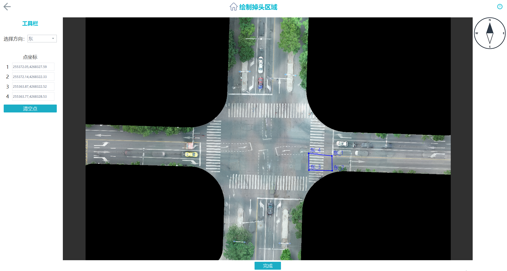

掉头区域绘制（可选）
单击
“掉头区域绘制”
，在工具界面中绘制所有的掉头区域。
单击左上角选择方向，例如
“东”
。
在该方向进口道停止线与道路中线的交点处单击选点1，即
图1
中的
“东_1”
。
可选：
沿着顺时针方向，在该方向出口道依次选取其他3个点，如
图1
中的
“东_2”
、
“东_3”
和
“东_4”
。
“东_2”
处于车道界限上。
“东_3”
与
“东_4”
分别由
“东_1”
、
“东_2”
向路口内延伸，并根据中间隔离带适当调整。上述4个点将自动连线，形成该方向的掉头区域框。
重复操作
2
～
4
，依次绘制其他方向的掉头区域。
在绘制时，可单击右上角
打开帮助参阅详细的绘制方法，也可以根据需要单击左上角的
“清空点”
重新绘制。
图1
掉头区域绘制

绘制完成后，单击
“完成”
。